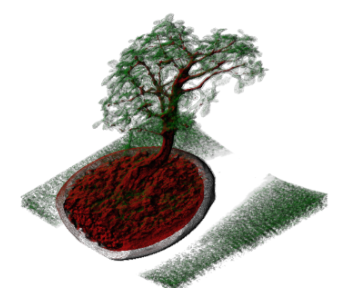

Traditional neural compressors lack user-defined error tolerance for controlling data loss.
This project enhances neural compression by integrating the wavelet transform-based compressor, SPERR,
and applying progressive residual error compression in multiple rounds to achieve error-bounded results.
Additionally, cross-platform compatibility was enabled on NVIDIA and Intel GPUs
by incorporating CUDA and SYCL as training backends.
SYCL has emerged as a promising programming model for GPGPU computing across various hardware vendors.
This project focuses on optimizing neural network inference, analyzing key performance factors,
and laying the groundwork for our ongoing efforts on neural compression running on Intel platforms.
This project utilized ray casting in GLSL for real-time CT/MRI rendering.
I developed a 1D/2D transfer function UI with GLUT, enabling users to explore key features.
I also managed multiple system modules to ensure seamless integration and performance.

3D Multiplayer Online Game
Tech stack: C#/Unity
Built with Unity and Photon Unity Networking, this game supports real-time voice and text chat, enhancing player collaboration.
The networking system efficiently handles communication for up to 8 players,
while design patterns like singleton and state machine ensure an extensible and scalable architecture.
As a software engineering course final project, we built a web backend using Python Flask and MongoDB, implementing 27 RESTful APIs.
We followed the Waterfall development process, including thorough documentation and test case development, ensuring a structured and reliable implementation.
Physics Simulation System
Tech stack: C++/OpenGL
This small computer graphics application simulates linear motion with gravity and natural forces.
It implements collision detection using bounding volume methods and optimizes performance with spatial partitioning techniques.